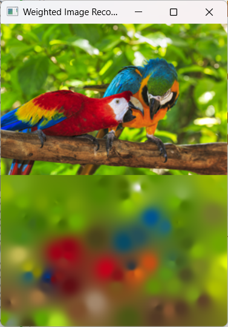
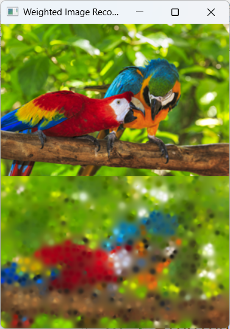
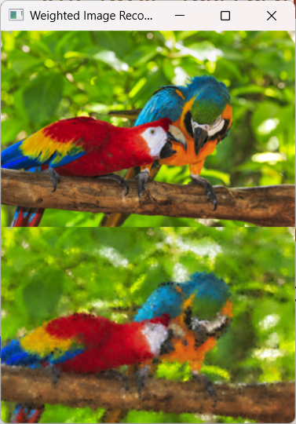

1. Introduction
In this article, we will see how we can reconstruct an image using Accumulative Weighted Interpolation.
The full program is available here: https://github.com/blueberry077/Weighted-Image-Reconstruction



2. Interpolation Formulation
Given three points \( A \), \( B \) and \( C \), we can calculate the distance between each point from \( C \) using these relations:
If we normalize the distances and invert them to get the weights:
Then we can calculate \( P \) the weighted attributes shared from \( A \) and \( B \) to \( C \):
Now say we have \( n \) points. We have:
and a reference point \( C \), we can calculate every distance:
Then use the inverted distances as weights:
Which gives us the interpolated point \( P \)
Here, \( P \) isn't our point \( C \), it is the weighted point resulting from the interpolation.
3. Notes
Apparently this exists as Inverse Distance Weighting (IDW). If you see this feel free to do whatever you want with this information.
I had fun learning LaTeX and figuring out a solution for a small prototype.